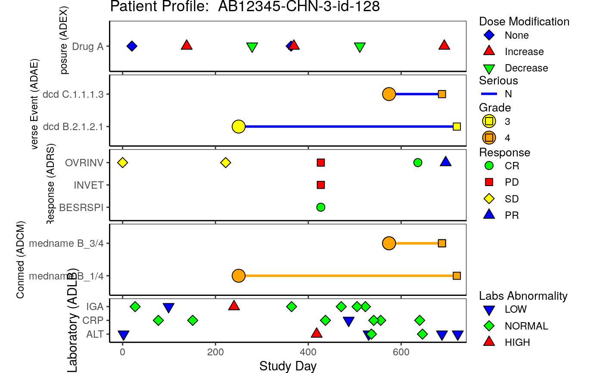
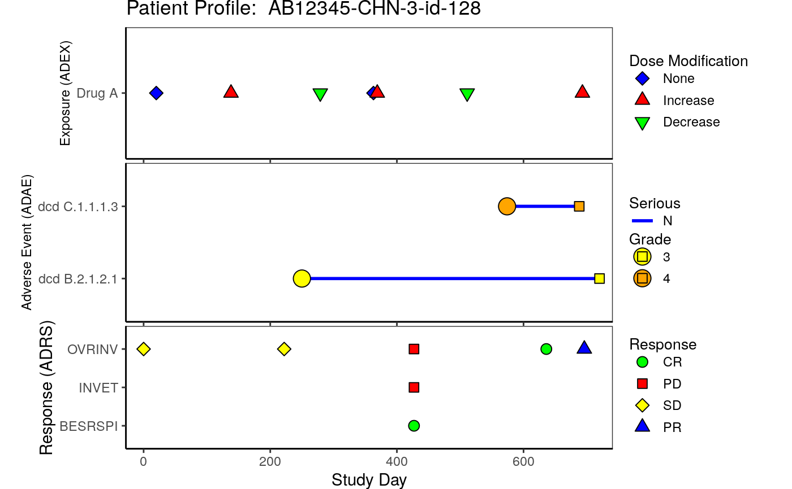

g_patient_profile.RdPatient profile plot provides detailed information for a specific subject participating in the study.
The plot includes relevant data for one subject that can help correlate adverse events, response,
concomitant medications, exposure, and laboratory. The plotting of patient profile is modularized, with
each domain plot generated by function patient_domain_profile. This g_patient_profile
function assembles all requested domain plots into one patient profile.
ADSL, ADEX, ADAE, ADRS, ADCM and ADLB data must be provided.
The plot output will not include domains with data unspecified
g_patient_profile( ex = NULL, ae = NULL, rs = NULL, cm = NULL, lb = NULL, arrow_end_day, xlim = c(-28, 365), xlab = "Study Day", title = "Patient Profile" )
| ex | list may contain
|
|---|---|
| ae | list may contain
|
| rs | list may contain
|
| cm | list may contain
|
| lb | list may contain
|
| arrow_end_day | numeric value indicates the end of arrow when arrows are requested |
| xlim | numeric vector for x-axis limit that will be shared by all domain plots, default is
|
| xlab | string to be shown as x-axis label, default is |
| title | string to be shown as title of the plot, default is |
plot object
#>#> #>#> #> #>library(dplyr) # ADSL rADSL <- radsl(cached = TRUE) ADSL <- rADSL %>% group_by(USUBJID) %>% mutate( TRTSDT = as.Date(TRTSDTM), max_date = max(as.Date(LSTALVDT), as.Date(DTHDT), na.rm = TRUE), max_day = as.numeric(as.Date(max_date) - as.Date(TRTSDT)) + 1) %>% select(USUBJID, STUDYID, TRTSDT , max_day) %>% filter(USUBJID == rADSL$USUBJID[1])#> Warning: no non-missing arguments to max; returning -Inf#> Warning: no non-missing arguments to max; returning -Inf#> Warning: no non-missing arguments to max; returning -Inf#> Warning: no non-missing arguments to max; returning -Inf#> Warning: no non-missing arguments to max; returning -Inf#> Warning: no non-missing arguments to max; returning -Inf#> Warning: no non-missing arguments to max; returning -Inf#> Warning: no non-missing arguments to max; returning -Inf#> Warning: no non-missing arguments to max; returning -Inf#> Warning: no non-missing arguments to max; returning -Inf#> Warning: no non-missing arguments to max; returning -Inf#> Warning: no non-missing arguments to max; returning -Inf#> Warning: no non-missing arguments to max; returning -Inf#> Warning: no non-missing arguments to max; returning -Inf#> Warning: no non-missing arguments to max; returning -Inf#> Warning: no non-missing arguments to max; returning -Inf#> Warning: no non-missing arguments to max; returning -Inf#> Warning: no non-missing arguments to max; returning -Inf#> Warning: no non-missing arguments to max; returning -Inf#> Warning: no non-missing arguments to max; returning -Inf#> Warning: no non-missing arguments to max; returning -Inf#> Warning: no non-missing arguments to max; returning -Inf#> Warning: no non-missing arguments to max; returning -Inf#> Warning: no non-missing arguments to max; returning -Inf#> Warning: no non-missing arguments to max; returning -Inf#> Warning: no non-missing arguments to max; returning -Inf#> Warning: no non-missing arguments to max; returning -Inf#> Warning: no non-missing arguments to max; returning -Inf#> Warning: no non-missing arguments to max; returning -Inf#> Warning: no non-missing arguments to max; returning -Inf#> Warning: no non-missing arguments to max; returning -Inf#> Warning: no non-missing arguments to max; returning -Inf#> Warning: no non-missing arguments to max; returning -Inf#> Warning: no non-missing arguments to max; returning -Inf#> Warning: no non-missing arguments to max; returning -Inf#> Warning: no non-missing arguments to max; returning -Inf#> Warning: no non-missing arguments to max; returning -Inf#> Warning: no non-missing arguments to max; returning -Inf#> Warning: no non-missing arguments to max; returning -Inf#> Warning: no non-missing arguments to max; returning -Inf#> Warning: no non-missing arguments to max; returning -Inf#> Warning: no non-missing arguments to max; returning -Inf#> Warning: no non-missing arguments to max; returning -Inf#> Warning: no non-missing arguments to max; returning -Inf#> Warning: no non-missing arguments to max; returning -Inf#> Warning: no non-missing arguments to max; returning -Inf#> Warning: no non-missing arguments to max; returning -Inf#> Warning: no non-missing arguments to max; returning -Inf#> Warning: no non-missing arguments to max; returning -Inf#> Warning: no non-missing arguments to max; returning -Inf#> Warning: no non-missing arguments to max; returning -Inf#> Warning: no non-missing arguments to max; returning -Inf#> Warning: no non-missing arguments to max; returning -Inf#> Warning: no non-missing arguments to max; returning -Inf#> Warning: no non-missing arguments to max; returning -Inf#> Warning: no non-missing arguments to max; returning -Inf#> Warning: no non-missing arguments to max; returning -Inf#> Warning: no non-missing arguments to max; returning -Inf#> Warning: no non-missing arguments to max; returning -Inf#> Warning: no non-missing arguments to max; returning -Inf#> Warning: no non-missing arguments to max; returning -Inf#> Warning: no non-missing arguments to max; returning -Inf#> Warning: no non-missing arguments to max; returning -Inf#> Warning: no non-missing arguments to max; returning -Inf#> Warning: no non-missing arguments to max; returning -Inf#> Warning: no non-missing arguments to max; returning -Inf#> Warning: no non-missing arguments to max; returning -Inf#> Warning: no non-missing arguments to max; returning -Inf#> Warning: no non-missing arguments to max; returning -Inf#> Warning: no non-missing arguments to max; returning -Inf# ADEX rADEX <- radex(cached = TRUE) ADEX <- rADEX %>% select(USUBJID, STUDYID, ASTDTM, PARCAT2, AVAL, AVALU, PARAMCD) ADEX <- left_join(ADSL, ADEX, by = c("USUBJID", "STUDYID")) ADEX <- ADEX %>% filter(PARAMCD == "DOSE") %>% arrange(PARCAT2, PARAMCD) %>% mutate(diff = c(0, diff(AVAL, lag = 1))) %>% mutate(Modification = case_when( diff < 0 ~ "Decrease", diff > 0 ~ "Increase", diff == 0 ~ "None")) %>% mutate(ASTDT_dur = as.numeric( as.Date(substr(as.character(ASTDTM), 1, 10)) - as.Date(TRTSDT) + 1)) # ADAE rADAE <- radae(cached = TRUE) ADAE <- rADAE %>% select(USUBJID, STUDYID, AESOC, AEDECOD, AESER, AETOXGR, AEREL, ASTDY, AENDY) ADAE <- left_join(ADSL, ADAE, by = c("USUBJID", "STUDYID")) # ADRS rADRS <- radrs(cached = TRUE) ADRS <- rADRS %>% select(USUBJID, STUDYID, PARAMCD, PARAM, AVALC, AVAL, ADY, ADTM) ADRS <- left_join(ADSL, ADRS, by = c("USUBJID", "STUDYID")) # ADCM rADCM <- radcm(cached = TRUE) ADCM <- rADCM %>% select(USUBJID, STUDYID, ASTDTM, AENDTM, CMDECOD, ASTDY, AENDY) ADCM <- left_join(ADSL, ADCM, by = c("USUBJID", "STUDYID")) # ADLB rADLB <- radlb(cached = TRUE) ADLB <- rADLB %>% select( USUBJID, STUDYID, LBSEQ, PARAMCD, BASETYPE, ADTM, ADY, ATPTN, AVISITN, LBTESTCD, ANRIND) ADLB <- left_join(ADSL, ADLB, by = c("USUBJID", "STUDYID")) ADLB <- ADLB %>% group_by(USUBJID) %>% mutate(ANRIND = factor(ANRIND, levels = c("LOW", "NORMAL", "HIGH"))) # Example Patient Profile plot 5 domains g_patient_profile( ex = list( data = ADEX, var = ADEX$PARCAT2 ), ae = list( data = ADAE, var = ADAE$AEDECOD, line_col = factor(ADAE$AESER), line_col_legend = "Serious", line_col_opt = c("Y" = "red", "N" = "blue") ), rs = list( data = ADRS, var = ADRS$PARAMCD ), cm = list( data = ADCM, var = ADCM$CMDECOD ), lb = list( data = ADLB, var = ADLB$LBTESTCD ), arrow_end_day = ADSL$max_day, xlim = c(-28, ADSL$max_day), xlab = "Study Day", title = paste("Patient Profile: ", ADSL$USUBJID) )# Example Patient Profile plot without ADCM and ADLB g_patient_profile( ex = list( data = ADEX, var = ADEX$PARCAT2 ), ae = list( data = ADAE, var = ADAE$AEDECOD, line_col = factor(ADAE$AESER), line_col_legend = "Serious", line_col_opt = c("Y" = "red", "N" = "blue") ), rs = list( data = ADRS, var = ADRS$PARAMCD ), arrow_end_day = ADSL$max_day, xlim = c(-28, ADSL$max_day), xlab = "Study Day", title = paste("Patient Profile: ", ADSL$USUBJID) )